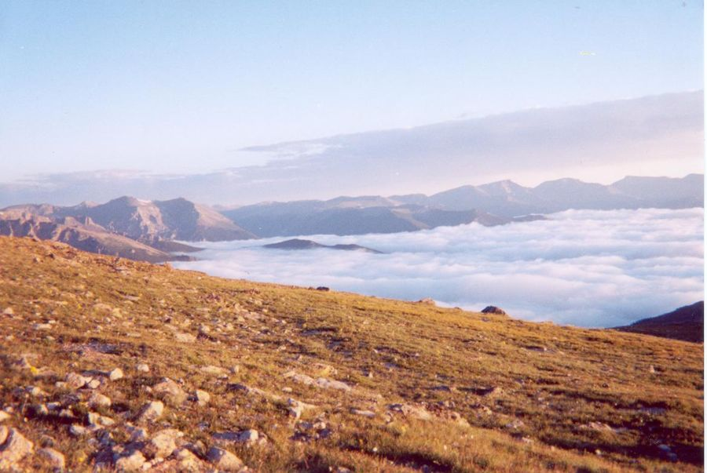
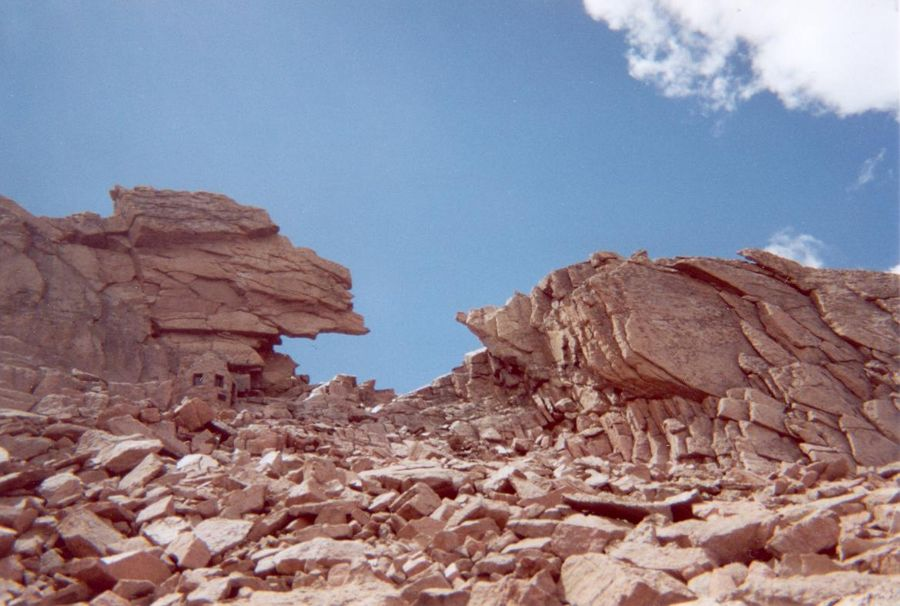
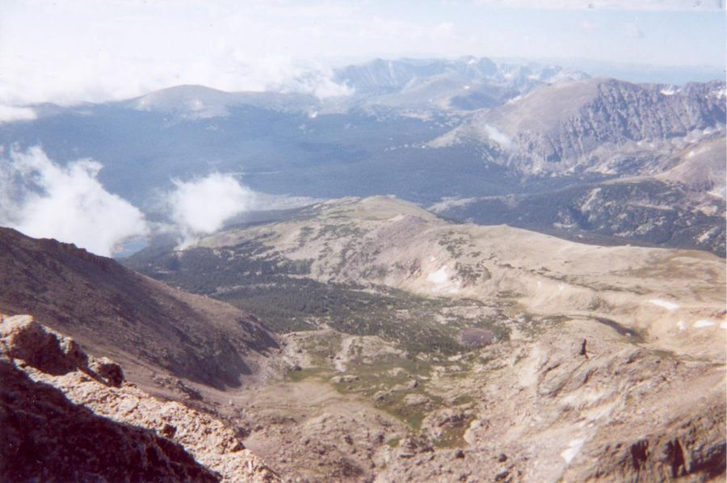

The route starts at the Longs Peak trailhead, about 9,400 feet up. Most hikers start before dawn to be off the summit before afternoon storms. The photo shows the view higher on the route, not the trailhead.
Photo: Ben+Sam · CC BY-SA 2.0 · Wikimedia Commons

The Keyhole is a notch in the ridge at about 13,100 feet. Beyond it the route becomes a scramble along ledges.
Photo: Ben+Sam · CC BY-SA 2.0 · Wikimedia Commons

You have reached the summit of Longs Peak, 14,259 feet up, the highest point in Rocky Mountain National Park.
Photo: Ben+Sam · CC BY-SA 2.0 · Wikimedia Commons